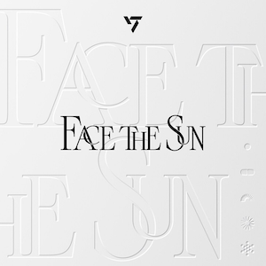
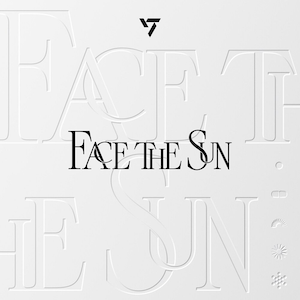

Get Familiar with Seventeen: A Music Sampler
{kind=link}
About the Group
Seventeen is a South Korean boy band specialized in various genres, including electropop, pop rock and R&B. Formed in 2015, the group consists of 13 members: S.Coups, Jeonghan, Joshua, Jun, Hoshi, Wonwoo, Woozi, DK, Mingyu, The8, Seungkwan, Vernon and Dino. Known for their complex choreography, diverse sound and larger-than-life personalities, Seventeen has gained millions of fans worldwide since their debut. Besides singing, rapping and dancing, the members are heavily involved in music production and choreography. As a self-producing act, Seventeen is often applauded for their ability to make every member stand out in their performances despite the group's large size.
Check Out the Group's Music
Click on any album cover to hear a sample from that album.
Now listening to: "Anyone" from the "Your Choice" Album (2021)
Now listening to: "Rock with You" from the "Attacca" Album (2021)
Now listening to: "Hot" from the "Face the Sun" Album (2022)
Now listening to: "Maestro" from the "17 is Right Here" Album (2024)

 
